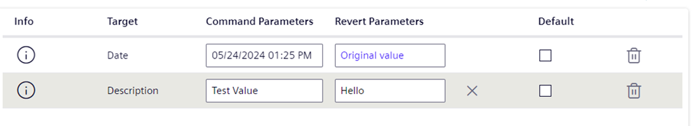

Setting Up Operator Tasks
This section provides instructions for creating or modifying operator tasks in Desigo CC Flex client. For instructions on how to execute and handle operator tasks, see Handling Operator Tasks.
Prerequisites
In the install client, you have:
- Operator Task templates pre-loaded in the project.
- Application rights for Operator Tasks enabled.
- User authorization to work with tasks and command target objects.
Create a New Operator Task
This procedure covers the full creation of an operator task, starting from the type of action you want to perform, and then setting the target objects.
- You are in the Tasks tab.
- Click Add and, from the drop-down list select the type of action to perform in this task.
For example, Suppress Alarms, Door Unlock/Lock or Exclude/Include Fire Objects.
NOTE: Preconfigured task templates are available depending on the extension modules and the installed Libraries. Suppress Alarm is a template included with the project by default. - The new task is added to the list and automatically goes into Edit mode.
- Modify the default Task name and Description.
The task name you enter must be unique. - For Start date, specify when you want the task to begin after the Start command is clicked:
- Immediately at task start: The task will start without any delay.
- At: The task will start at the specified date and time.
- In: The task will start after the specified delay has elapsed.
- For Due date, specify when you want the task to end:
- At: The task will end at the specified date and time.
- In: The task will end after the specified duration has elapsed.
- Expand Targets.
For full details about these fields, see Tasks Targets. - Select a Revert option which indicates how the commanded objects are set back to their original values.
For example, fromUnlockedback toLocked, when the task ends.
- Automatic: When the due date is reached, the commands are automatically reverted.
- Manual: When the task commands are sent, a Revert command becomes available for the operator to click.
-No revert commands: the action performed by this type of task cannot be reverted. - If the task can be reverted, you can optionally switch between the Manual and Automatic settings.
- Click Add
- The Select data point dialog box displays.
- Select the data points that you want to add and then click Select.
You can either select a single data point or multiple data points by using the multi-select option. For more information, see Multi-select in System Browser. - You can add the same object more than once if it belongs to different views.
This is helpful with specific functions that must be applied only to certain view sublevels. - You can also remove associated target objects by clicking on .
- The Command Parameters and Revert Parameters column become available if the commands of this tasks have parameter values that can be overridden:

- To change a parameter, select a value appropriate for the targets commanded properties type.
- To reset a parameter to its original value, clear the field or click .
- Check the Default check box to apply those parameter values to all other target objects of the same type.
For details about parameters, see Task Targets, Command and Revert Parameters. - Click Save.
- The task changes to view mode.
Modify an Existing Operator Task
Depending on the task status, you can modify some settings of an existing operator task.
- In the Tasks tab, select the task you want to modify.
- Click Edit.
- In the General Settings expander, the settings that cannot be modified appear dimmed. If the task status is:
-
Idle: You can modify any of the settings. See Tasks General Settings and Tasks Targets. -
Failed: You can modify any of the settings except the Name. -
Running, Running with exceptionsor Expired:You can only modify the Due date. - Click Save.
Adjust the Due Date of an Operator Task
You can change the due date to adjust when an operator task ends, to make it continue for longer or finish sooner than originally specified.
- The due date can be changed when the task status is:
- IdleIdle
-Running(or Running with exceptions)
- Failed
- Expired
- In the Tasks tab, from the task list, select the task you want to modify.
- Click Edit.
- In the task settings pane, next to Due date, modify date and time when you want the task to finish. For details about these fields, see Tasks General Settings.
- Click Save.
- If the Note dialog box displays, enter your comment, and click OK.
- If the task is
Expired, the task is automatically restarted.
Duplicate an Operator Task
Duplicating an existing operator task allows you to run it again. This makes it possible to repeat the same or a similar action, without configuring a new operator task from scratch.
- You can duplicate a task when its status is:
- Idle
- Closed
- Closed for missing license
- In the Tasks tab, select the task you want to duplicate.
- Click Duplicate.
- In the message box that displays:
- Click Yes to delete the original source task.
- Click No to keep the original source task.
- The duplicated task appears in the list. By default, its name is the same as the original source followed by # and its sequential number (for example,
myoperatortask#2). The status is reset to Idle, meaning it is available to be started. - (Optional) If you want to make adjustments to the task:
a. Click Edit.
b. Modify the settings as needed, for example, you can alter the Start Date and End Date, or change the name and description or add/remove targets. For details, see Tasks General Settings and Tasks Targets.
c. When finished click Save.
Delete an Operator Task
Deleting a task removes it from the list in the Tasks tab.
- You can delete a task when its status is:
- Idle
- Closed- Closed for missing license
- In the Tasks list, select the task you want to delete.
- Click Delete.